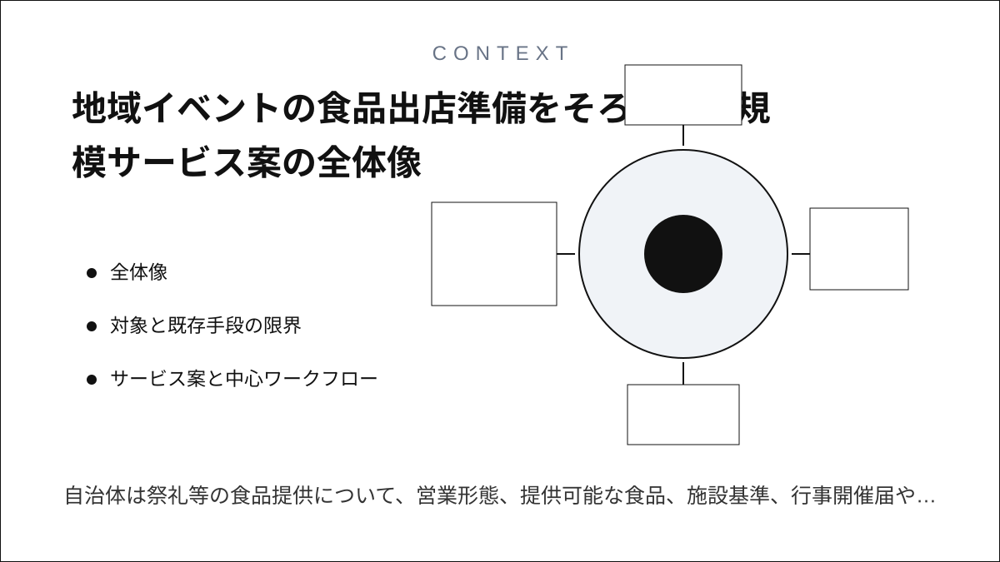
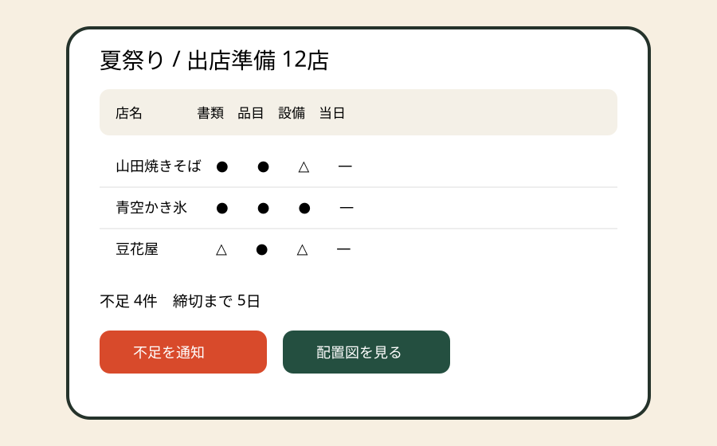
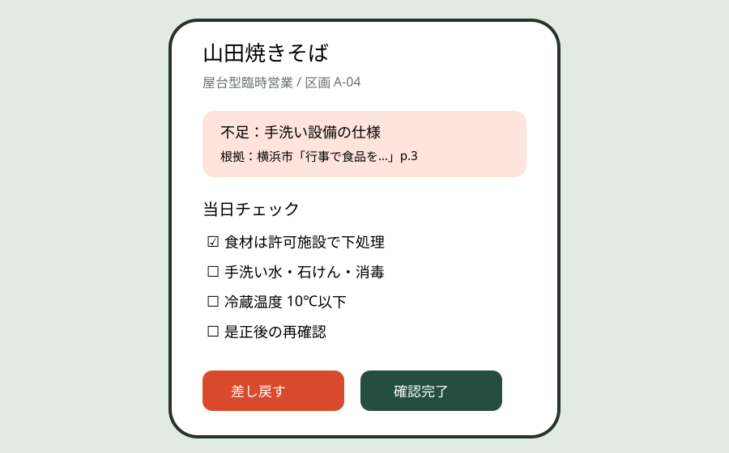
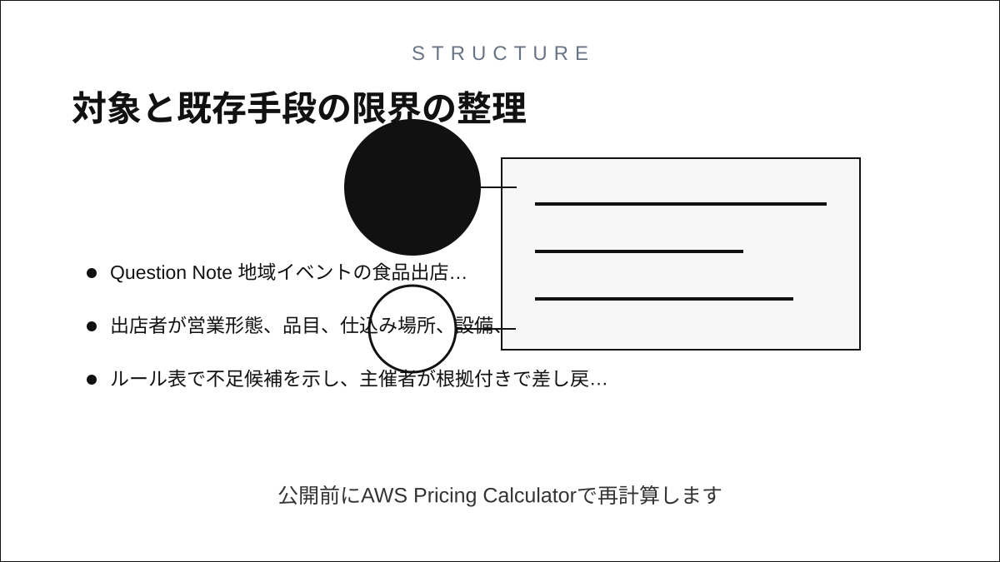
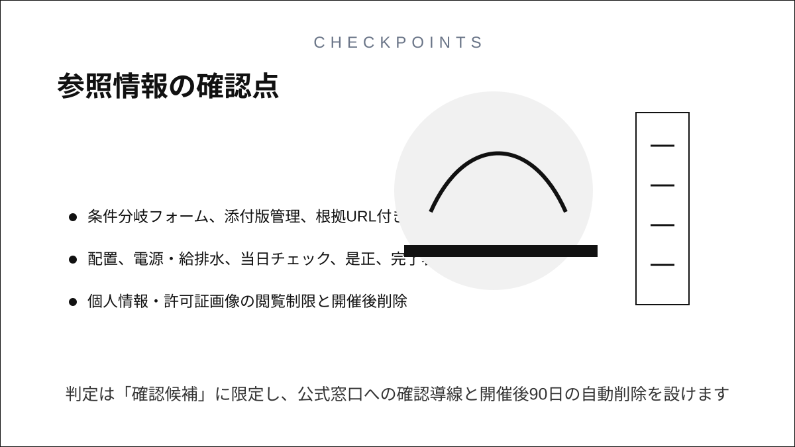

Question Note
地域イベントの食品出店準備をそろえる小規模サービス案



全体像
自治体は祭礼等の食品提供について、営業形態、提供可能な食品、施設基準、行事開催届や臨時出店届を案内しています。小さな主催者は出店者ごとに異なる許可・届出、メニュー、仕込み場所、給排水、手洗い、温度管理をメール添付で集め、保健所確認と当日担当へ転記しています。

募集 → 書類回収 → 不足差し戻し → 保健所相談 → 配置確定 → 当日衛生確認を出店者単位で閉じる運営サービスにします。行政判断や営業許可を代替しません。
対象と既存手段の限界
| 利用者 | 課題 | 既存手段の限界 |
|---|---|---|
| 商店街・自治会・学校外イベント | 出店要件の回収 | メール添付では最新版と不足理由が混在 |
| 食品出店者 | 品目別条件の理解 | 紙の手引きから自分の条件を拾いにくい |
| 当日衛生担当 | 設備・温度・手洗い確認 | 申請情報が現場チェック表へつながらない |
紙は更新共有に弱く、電話は証跡が残らず、チャットは出店者別の完了条件を集計できず、表計算は添付、差し戻し履歴、権限、当日モバイル確認が分断されます。
サービス案と中心ワークフロー
- 主催者が自治体・保健所の案内URLと締切を登録する。
- 出店者が営業形態、品目、仕込み場所、設備、許可番号を入力する。
- ルール表で不足候補を示し、主催者が根拠付きで差し戻す。
- 配置図と給排水条件を確定し、当日チェック担当へ割り当てる。
- 設営写真、温度、手洗い設備、是正完了を記録し、開催後に削除期限を迎える。
100万円規模の収益
年間複数イベントを運営する商店街・制作会社・地域団体へ、20組織 × 月額4,000円 × 12か月 + 導入研修60,000円 = 売上1,020,000円。直接営業可能な50組織中20組織を初年度の範囲とします。
システム要件
- イベント、出店者、営業形態、品目、許可・届出、締切の管理
- 条件分岐フォーム、添付版管理、根拠URL付き差し戻し
- 配置、電源・給排水、当日チェック、是正、完了署名
- 個人情報・許可証画像の閲覧制限と開催後削除
AWSシステム要件と支出
東京リージョン、無料枠・クレジット除外、1 USD = 155円。公開前にAWS Pricing Calculatorで再計算します。
| AWS | 用途 | 想定 | 月額 | 年額 |
|---|---|---|---|---|
| S3 + CloudFront | Web・許可証・配置図配信 | 30GB、月5万配信 | 1,500円 | 18,000円 |
| Cognito | 主催者・出店者・確認者認証 | 500 MAU | 1,000円 | 12,000円 |
| API Gateway | 申請・差し戻し・当日確認API | 月25万req | 900円 | 10,800円 |
| Lambda | 条件分岐、締切通知、帳票 | 月25万実行 | 1,100円 | 13,200円 |
| DynamoDB | 組織、イベント、出店者、品目、許可種別、申請状態、不足項目、配置、当日確認、是正、監査履歴 | 8万件、on-demand | 2,000円 | 24,000円 |
| SES | 締切・差し戻し・確定通知 | 月6,000通 | 1,000円 | 12,000円 |
| CloudWatch | エラー・監査ログ | 月5GB | 1,200円 | 14,400円 |
| AWS Backup | 設定・記録の復旧 | 月30GB | 900円 | 10,800円 |
| AWS Budgets | 予算超過通知 | 2予算 | 200円 | 2,400円 |
| Route 53 | 独自ドメインDNS | 1 zone | 100円 | 1,200円 |
| 合計 | AWS利用料 | 9,900円 | 118,800円 | |
開発、人員、利益
AIで条件分岐フォーム、CRUD、通知文、チェック表、テストケースを短縮し、要件2週、試作2週、本実装4週、実証3週の11週。1人が営業、設定、一次サポートを担当し、食品衛生監修12万円、法務・個人情報8万円、UIと脆弱性診断各8万円を外注します。
支出はAWS 118,800円、ドメイン3,000円、外注360,000円、営業・運営180,000円、予備費80,000円で741,800円。売上 - 支出 = 利益より1,020,000円 - 741,800円 = 278,200円です。
最初の実証とリスク
10出店者の模擬イベントで、不足発見までの時間、差し戻し往復、当日確認時間を測ります。自治体ごとの差、無許可営業を許容する誤判定、許可証画像の過剰保持が主リスクです。判定は「確認候補」に限定し、公式窓口への確認導線と開催後90日の自動削除を設けます。
参照情報
